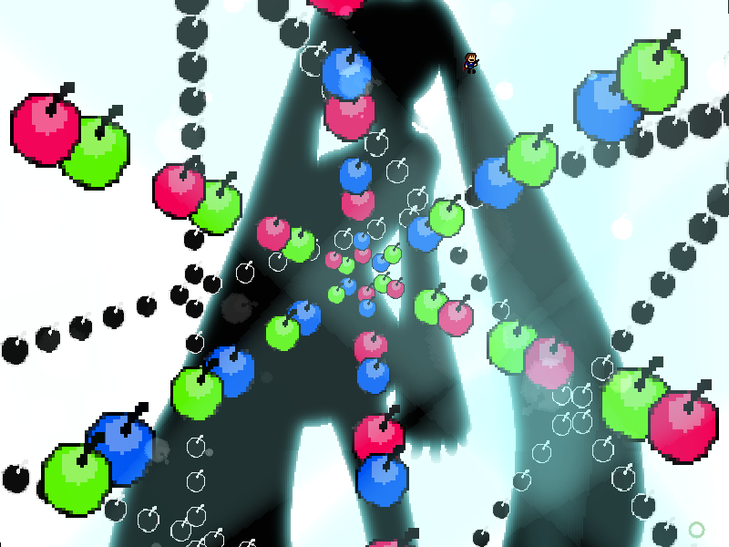
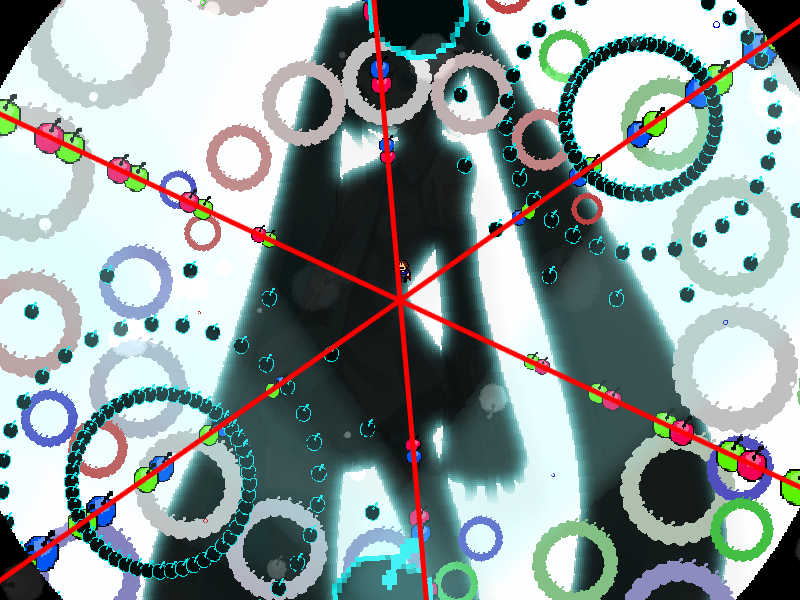
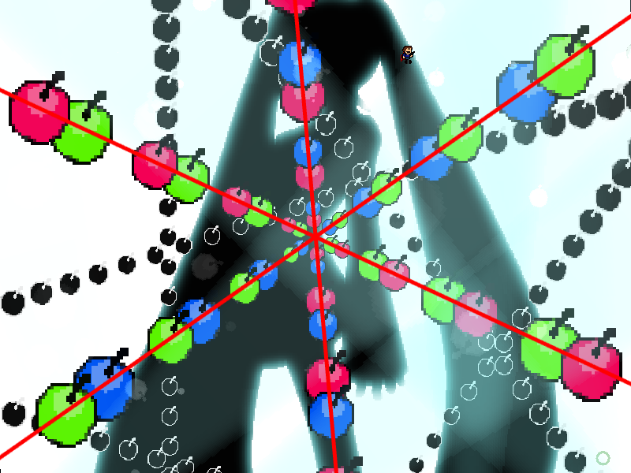

| creator | segment | label | jump |
|---|---|---|---|
| NN | 2:32.80~2:33.60 | P*A/Q | infinite |
11-3の解答に対応する、角度のみがランダムな弾幕です。
11-3において画面中央を中心として回転する同心円状弾幕に関して、これらを構成する弾がすべての層について同一直線上に並ぶ瞬間が2:30.90~2:32.80において1度だけ存在します（fig.11-4.1.a）。
2:33.20において画面外側から出現する6方向に広がる放射状弾幕の角度については、11-3において同心円状弾幕を構成する弾が同一直線状に並んだ瞬間の角度を基準として決定されます（fig.11-4.1.b）。
なお、これらの弾幕については画面の傾きの影響を受けないことに注意が必要です。


2:33.20において画面下部を中心として生成される星型弾幕については、半径が生成時の中心とプレイヤーとの距離を基準として決定され、また各時刻において中心から見たプレイヤーの角度に対して最も開いた形状をとります。